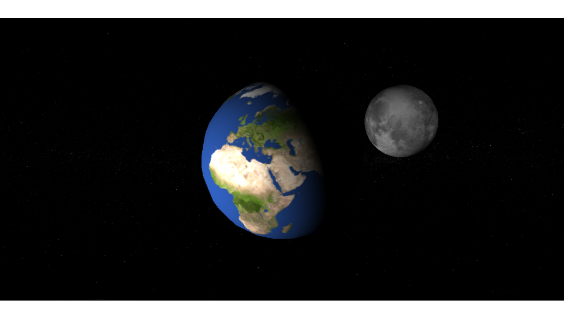
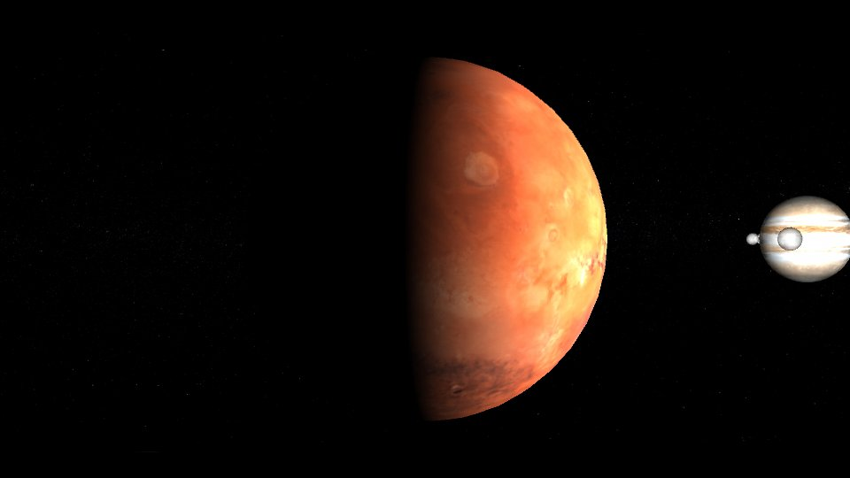
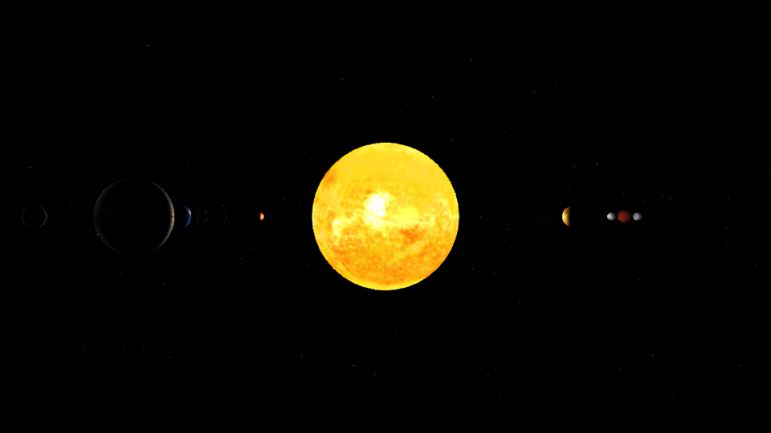

Computer Animation · Project 1
Project 1 – Planet Animation
Original tutorial animation
Playblast v1 — the completed tutorial animation, before edits.
Playblast v1 — the completed tutorial animation, with background added.
Enhancements I made

Enhancement 01
Planet textures
I replaced the default planet materials with higher-resolution textures from solarsystemscope.com, giving each planet realistic surface color and detail instead of flat shading.

Enhancement 02
Sun as the light source
Using Maya's illumination settings, I set the sun as the scene's light source so each planet is lit and shadowed the way it would be from actual sunlight.

Enhancement 03
Planet position and speed
I adjusted the position and orbit speed of each planet so their spacing and motion better reflect their real relative distances and speeds in the solar system.
Modified animation
Playblast v2 — the final animation with all three enhancements applied.
Notes
The textures made the biggest visual difference. By swapping in real planetary surface maps, immediately the scene felt less like a placeholder and more like an actual solar system. The process of switching the light source to the sun took a bit of trial and error in Maya to get the shadows falling naturally on each planet, but it was worth it for how much more physically correct the lighting looks. Finally, adjusting the position and speed of the planets last tied everything together and made the orbits feel more intentional.


.png)
.png)